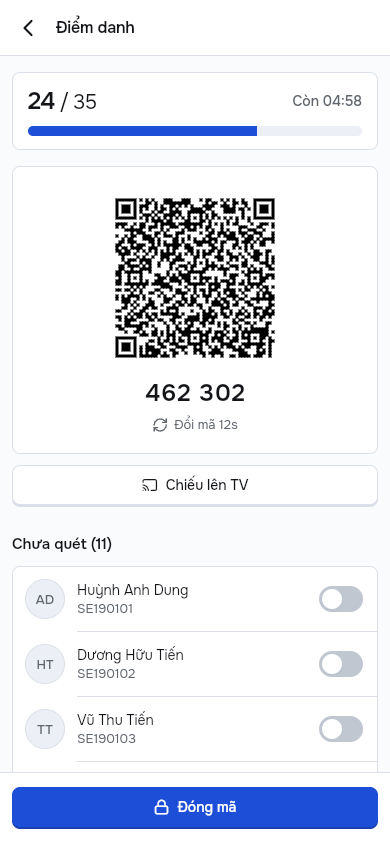
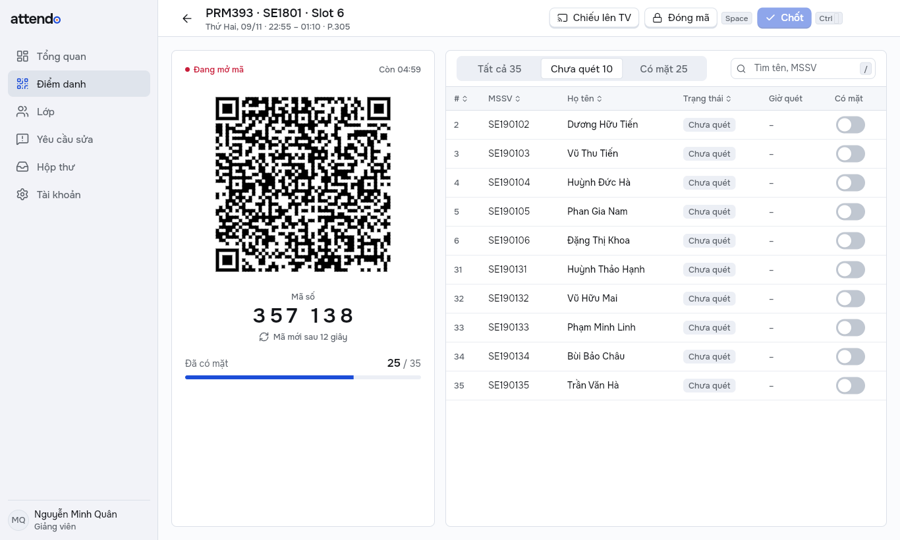
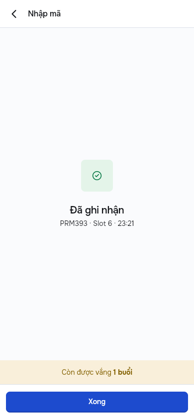
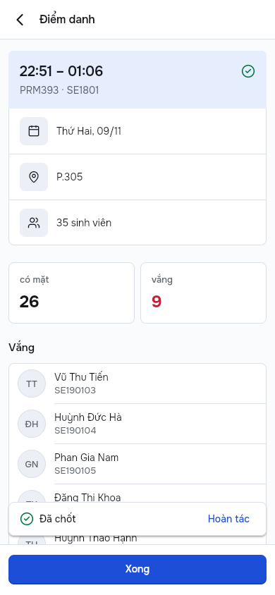
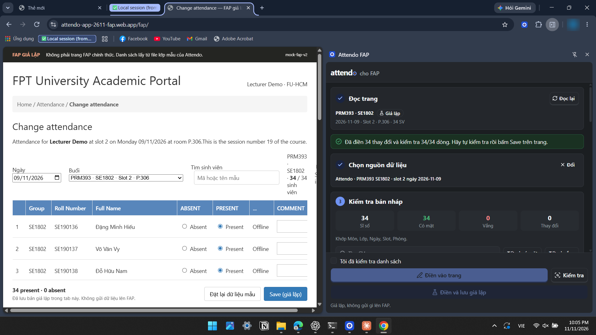
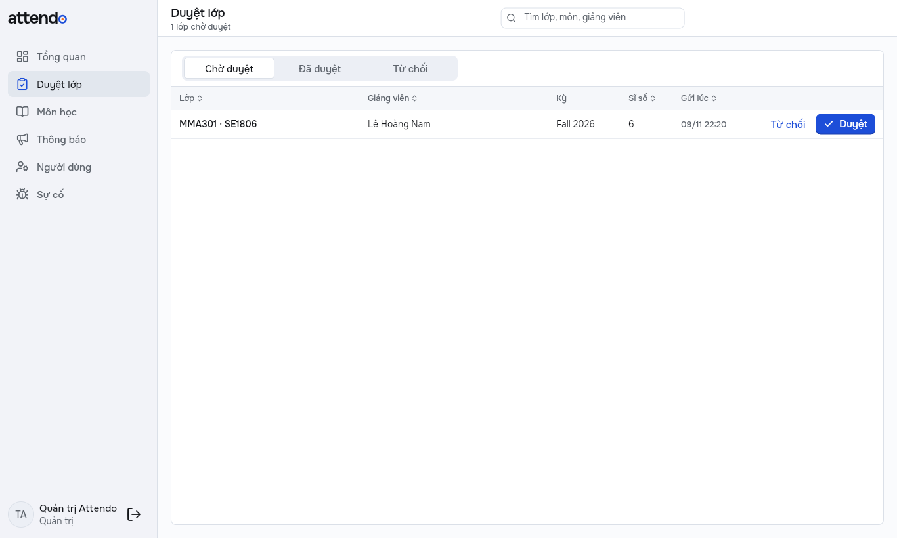
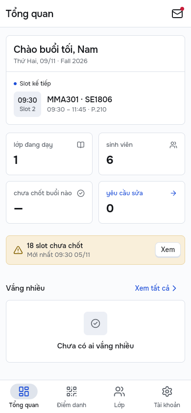
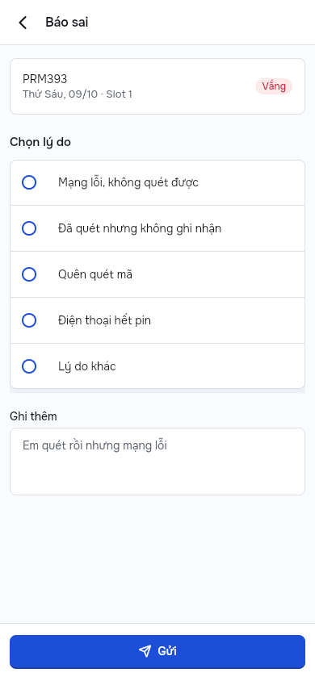
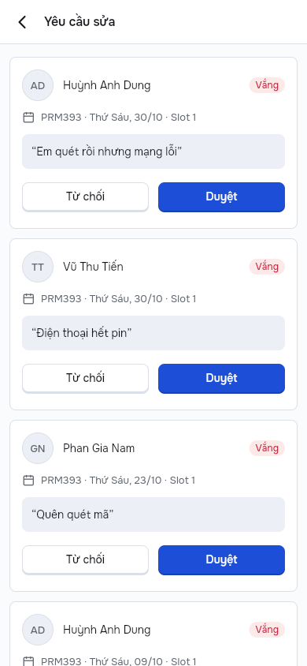
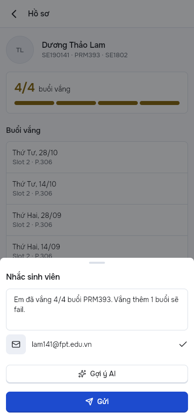

PRM393 · Final project
Attendo
Hệ thống điểm danh bằng mã QR
Hệ thống điểm danh bằng mã QR cho lớp đại học: app giảng viên trên điện thoại và Windows, web cho sinh viên, web cho giáo vụ, và extension điền sẵn vào FAP.
1 · Vấn đề
Bối cảnh, vấn đề và giải pháp
Mất thời gian đầu giờ
→ Mã QR đổi mỗi 12 giây, sinh viên tự quét hoặc gõ 6 số; lớp 35 em không cần gọi tên.
Quên chốt, sửa khó
→ Dải nhắc slot chưa chốt; sinh viên báo sai, giảng viên duyệt trong app; extension điền FAP từ bản đã chốt.
Biết ngưỡng vắng muộn
→ Sinh viên thấy số buổi vắng trên tổng được phép; giảng viên nhắc sớm, có gợi ý lời nhắc bằng AI.
1 · Vấn đề
Actor và persona
Giảng viên
App Android và Windows: mở mã, chốt, duyệt báo sai, nhắc sinh viên; extension điền FAP.
Sinh viên
Web trên điện thoại hoặc laptop: quét mã, xem buổi vắng, báo sai.
Giáo vụ / quản trị
Web admin: duyệt lớp, môn học, thông báo, người dùng, sự cố.
Nhóm phát triển
Firebase console: Crashlytics, Analytics, Remote Config, gửi FCM.
P-01 · Primary
Thầy Minh Quân
Dạy 3 đến 4 slot mỗi ngày, lớp 35 em. Muốn chốt điểm danh trong vài giây rồi dạy tiếp, biết sớm em nào vắng nhiều.
P-02 · Secondary
Cô Thu Hà
Lịch dạy không đều, hay quên điểm danh. Cần được nhắc khi slot hết mà chưa chốt.
P-03 · Secondary · web
Bạn Gia Huy
Sinh viên ít khi xem số buổi vắng. Chỉ mở web để quét mã, cần thấy mình còn được vắng mấy buổi.
2 · Thiết kế
Business flow
2 · Thiết kế
Bốn workflow lõi
| Mã | Trigger | Các bước chính | Rẽ nhánh | Kết quả |
|---|---|---|---|---|
| WF-01 | Tới giờ slot | Mở mã → sinh viên quét → đóng mã → chốt → extension điền FAP | Mất mạng lúc chốt; hoàn tác; quên chốt | Slot đã chốt, FAP khớp |
| WF-02 | Sinh viên thấy sai | Báo sai có lý do → giảng viên duyệt hoặc từ chối | Từ chối có lý do; không báo lại | Buổi đổi thành có mặt |
| WF-03 | Giảng viên nhập lớp | Lớp chờ duyệt → giáo vụ duyệt trên web → app đổi ngay, hộp thư có tin | Từ chối kèm lý do; nhập lại | Lớp mở điểm danh được |
| WF-04 | Em sắp chạm ngưỡng | Vắng nhiều → hồ sơ → Gợi ý AI → sửa → gửi nhắc | AI lỗi hoặc bị tắt: dùng lời mẫu | Lời nhắc đã gửi |
2 · Thiết kế
State machine
2 · Thiết kế
Kiến trúc hệ thống và công nghệ
2 · Thiết kế · mỗi client
Giao diện theo thiết bị


2 · Thiết kế
Traceability
| Yêu cầu | Màn | Test tự động | Bằng chứng thật |
|---|---|---|---|
| Điểm danh một buổi (WF-01) | GV-102, SV-101, TV-001 | E2E W03, W48, W70 | T1, trễ < 1,1 s |
| Điền FAP từ bản đã chốt | Extension | E2E W60 | 34/34 khớp, chặn sai ngày |
| Báo sai, duyệt (WF-02) | SV-102, GV-105 | E2E W11, W12 | Claude chạy trên Firebase thật 09/11 |
| Duyệt lớp liên vai trò (WF-03) | Web Duyệt lớp, GV-003 | E2E W20, W61 | T3 |
| Web admin: tổng quan, sự cố | Admin | E2E W30, W34 | 98% có mặt, Sự cố |
| Khác thiết kế ban đầu | Bảng D-… trong docs/design-traceability.md | ||
3 · Demo
Demo plan
| Thứ tự | Workflow | Actor và màn | Kết quả mong đợi |
|---|---|---|---|
| 1 | WF-01 Điểm danh một buổi | Giảng viên: điện thoại, Windows, TV. Sinh viên: web | Số có mặt tăng trên cả ba màn; chốt; extension điền FAP |
| 2 | WF-02 Báo sai | Sinh viên: web. Giảng viên: app | Buổi vắng thành có mặt, sinh viên thấy ngay |
| 3 | WF-03 Duyệt lớp | Giảng viên mới: app. Quản trị: web admin | Lớp hết "chờ duyệt", hộp thư có tin |
| 4 | WF-04 Nhắc sinh viên, có AI | Giảng viên: app. Remote Config console | AI gợi ý lời nhắc; tắt cờ thì nút AI biến mất |
Dữ liệu: nạp lại bằng workflow "Demo: Firebase thật" trước khi demo, có một slot đang diễn ra.
Tài khoản: mỗi vai trò một tài khoản demo, ghi trong README.
Dự phòng: video demo, link trong README.
3 · Demo
WF-01 · Điểm danh một buổi



3 · Demo · luồng liên vai trò
WF-02 Báo sai · WF-03 Duyệt lớp
WF-03 · duyệt lớp


Giáo vụ bấm Duyệt trên web → app giảng viên bỏ chữ chờ duyệt, hộp thư có tin. Thời gian: đo khi quay video.
WF-02 · báo sai


Sinh viên chọn lý do → giảng viên duyệt hoặc từ chối kèm lý do; buổi đã từ chối không báo lại được.
3 · Demo · AI mức 2
WF-04 · Gợi ý lời nhắc bằng AI

Structured output
Gemini trả JSON đúng lược đồ {tone, message, next_step}; sai lược đồ thì app báo lỗi, không đoán.
Người xác nhận
Lời gợi ý điền vào ô soạn, có nhãn "AI gợi ý"; giảng viên sửa rồi mới gửi.
Tắt được
Remote Config ai_reminder_enabled; prompt và model cũng ở Remote Config. Đã chạy trên điện thoại thật.
4 · Bằng chứng
Kiểm thử
Lỗi tìm được khi test thật: chỉ mục tổng hợp sai thứ tự trường (LOI-14), phím Esc làm rời phiên (W70), App Check bắt buộc cho AI (LOI-15). Mọi lỗi ghi ở docs/demo/loi.md.
Đã thêm: 13/13 sự kiện trên DebugView, CodeRabbit review trên PR. ARTEMIS: chạy 12 trên 17 ca, mỗi ca 1 lần; 3 đạt, 6 đạt giao diện nhưng trượt bước kiểm log, 3 trượt. Chưa đo: số giây duyệt lớp.
4 · Bằng chứng
Kết quả, giới hạn và bài học
Đạt được
- 4 workflow chạy trên Firebase thật
- 5 cửa vào dùng chung một lõi
- Không server, gói Spark
Giới hạn
- FCM gửi bằng script, chưa tự động
- Web sinh viên chưa có thông báo đẩy
- Extension chỉ chạy trên FAP giả
Bài học
- Test trên Firebase thật bắt được lỗi Emulator bỏ sót (chỉ mục, App Check)
- Luồng liên vai trò phải test bằng hai màn hình cùng lúc
- Rules viết kèm test ngay từ đầu
Bước tiếp
- Cloud Functions khi lên Blaze: gửi thông báo khi duyệt
- Thử với một lớp thật
- Xin phép trước khi bật extension cho FAP thật